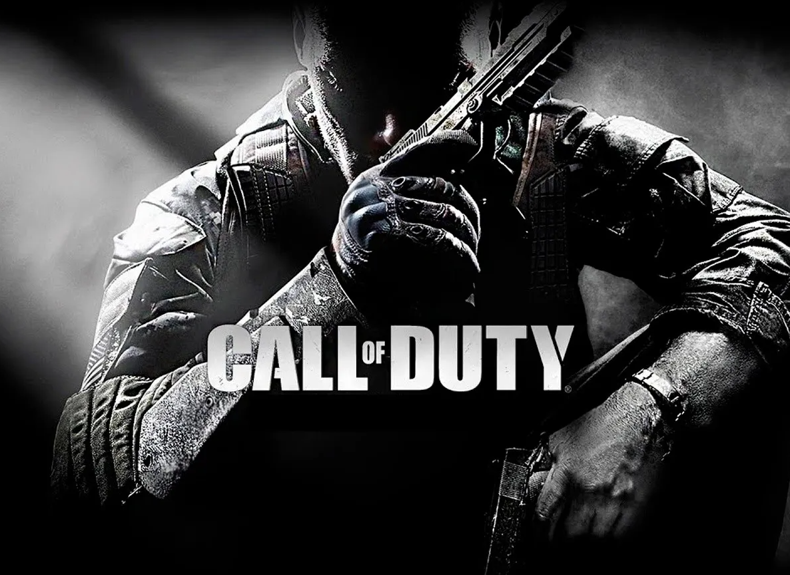
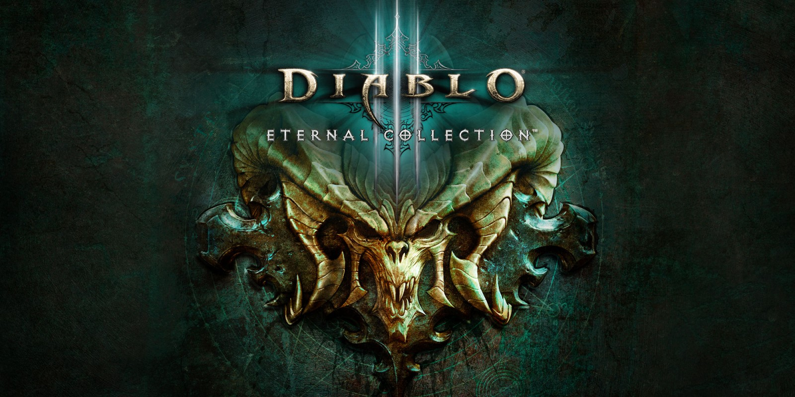
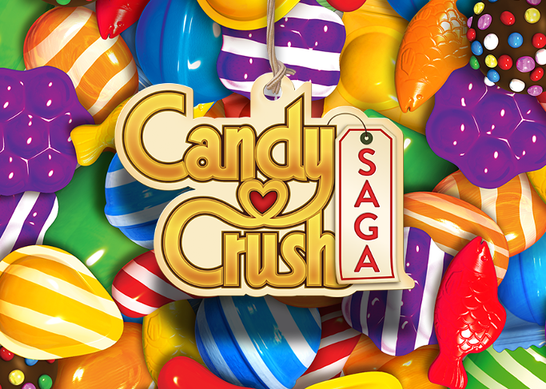
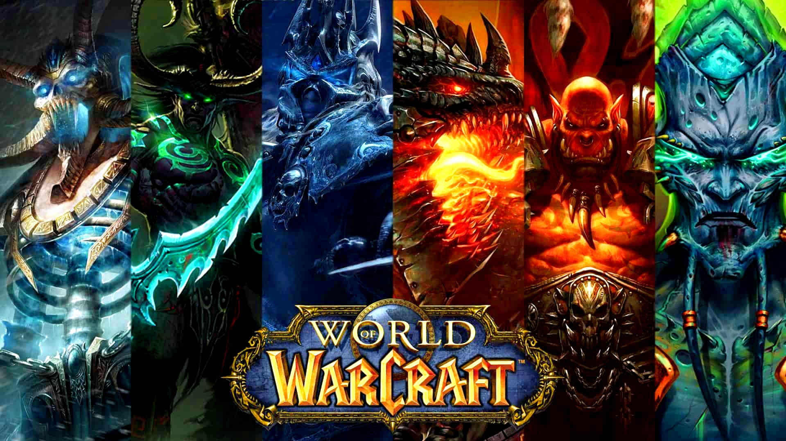

El 18 de enero de este año, Microsoft anunció la compra de Activision Blizzard por 68700 millones de dólares,
convirtiéndose así en la tercera compañía de videojuegos con mayor cantidad de ingresos a escala mundial, siendo
superada tan solo por Tencent y Sony.
No obstante, aunque no sea la empresa con mayor cantidad de ganancias en el sector, es muy probable que, gracias
a esta adquisición, cambie el futuro de la industria. ¿Cómo es esto posible? Para responder a esta pregunta,
analizaremos primero el perfil económico de la sociedad comprada y citaremos los títulos que le dieron fama.
Activision no estaba pasando por su mejor momento cuando fue comprada. El último Call of Duty (una de las
franquicias más conocidas de la empresa) había obtenido menos ventas que su antecesor, siendo en España el
peor lanzamiento de la saga en los últimos diez años. Además, durante el verano del año pasado, la compañía
fue demandada por acoso sexual hacia sus trabajadoras.
Como consecuencia, sus acciones a finales de 2021 eran bastante menores que las del año anterior por las mismas
fechas. Sin embargo, el día que fue adquirida por Microsoft, aumentaron en una gran cantidad, como se puede
observar en el siguiente gráfico:
Aquí se expone una lista con las IPs más conocidas de Activision. Cabe mencionar que, en el ámbito de los videojuegos,
se entiende el término IP como un sinónimo de saga o franquicia, no como una dirección de internet.
Cuando Microsoft compró Activision, ambas sociedades pertenecían al top mundial de compañías con mayor
cantidad de ingresos del sector, estando en cuarta y quinta posición, respectivamente. Actualmente, considerando
que Activision forma parte de Microsoft, el top sería el siguiente:
Como vimos anteriormente, Activision posee una gran cantidad de títulos conocidos, que le proporcionan múltiples
ganancias. Dichos títulos ahora son propiedad de Microsoft. Si, además, añadimos los juegos creados por estudios de
esta empresa, obtenemos un catálogo con una amplia variedad de temática. Por lo tanto, las decisiones que tome la
compañía seguramente influirán en la mayor parte de la industria.
Creo que en el futuro se intentarán promocionar suscripciones como el Xbox Game Pass o el PlayStation Plus (esto
justificaría el reciente interés de las compañías en comprar estudios y otras empresas). Las compañías competirán por
proporcionar la suscripción más completa y accesible para atraer a la mayor cantidad de jugadores que puedan,
"matando" en el proceso al formato físico. Así, llegará un momento en el que será imposible jugar sin pagar un servicio
que proporcione juegos.